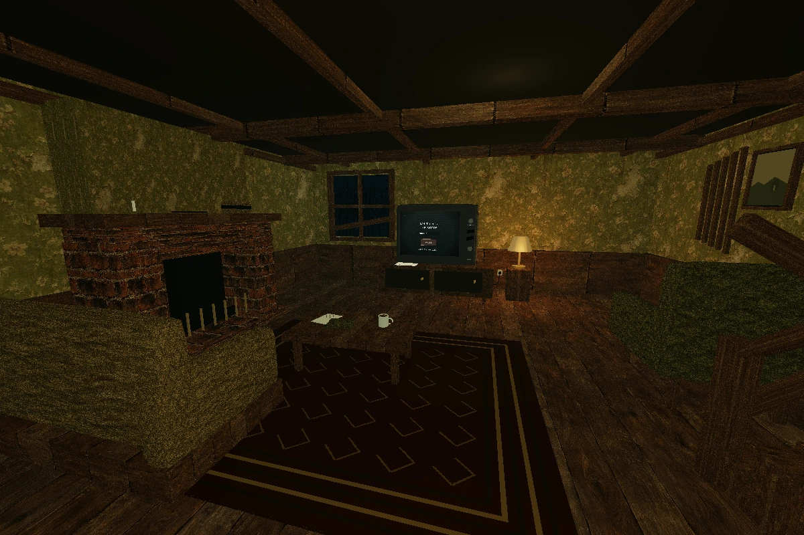
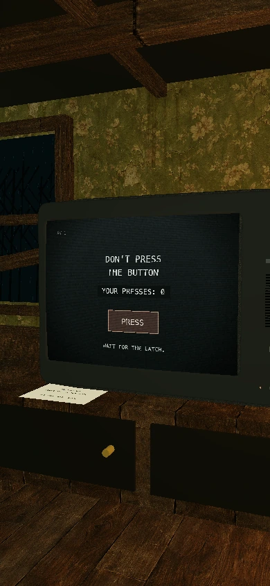
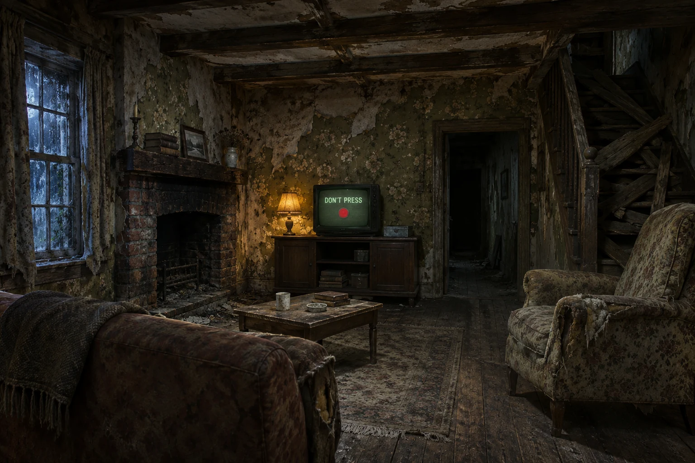

The new room · Current build · Tap to walk
The house has
been listening.
A decaying country-house sitting room. A cold fireplace. Stairs blocked by fallen timber. The only light comes from a tired lamp, the window, and a television that knows when you touch it.

At the monitor · Phone framing

Inside the playable version
One room.
Another way through.
- A fireplace, sofa, coffee table and armchair give the house a lived-in scale.
- The aged charcoal CRT has curved glass, dim grey broadcast text, and a flat rust-red control. Your press counter stays on its screen.
- The TV issues spoken instructions and deceptive orders. During searches, the nightmare Roomkeeper lowers its face toward the space under your table while new whispers try to draw you out.
- The lamp shade, crooked picture, cupboard and rain move subtly. Figures disappear when you look away.
- The stairs are visibly barricaded. This version explores the ground floor.
- Survive the Keeper’s instructions and both searches to release the sitting-room door. A narrow hall leads past a kitchen you can enter.
- Leave quietly, or choose more horror before walking farther down the hall.
Tap the monitor to walk toward it, or tap a clear floor spot to go elsewhere. Drag to look. Once close, tap TV lettering to start the Keeper’s orders. Obey only qualified commands, hide under the table when told, and wait for permission to leave. The rust-red button still triggers its photo fake-out and scare.
Earlier atmosphere study

Inspect the new nightmare face · Play the clear reveal video